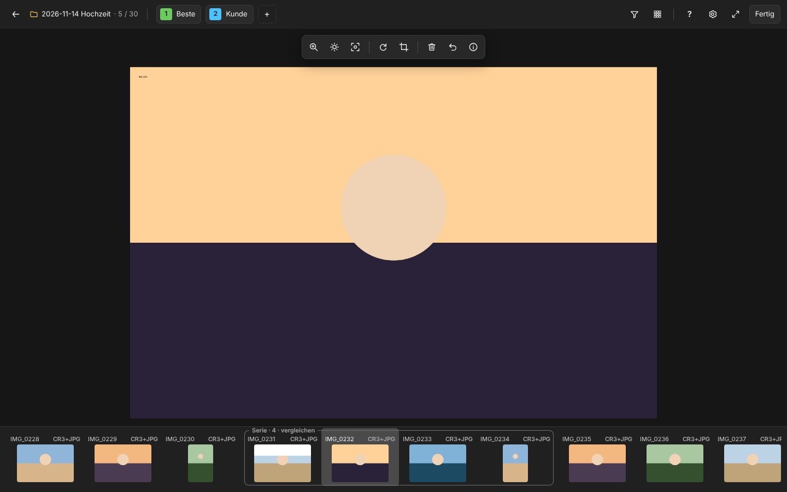

ShotSort
Fotos aus einem Shooting schnell durchsehen und die besten per Tastendruck in Zielordner kopieren. Die Originale bleiben dabei immer unverändert.

Gemacht zum Aussortieren
Durchblättern, entscheiden, Taste drücken. Alles Weitere erledigt ShotSort.
Kopieren per Tastendruck
Bis zu neun Zielordner auf den Tasten 1–9, z. B. „Beste“ und „Kunde“. RAW, JPG und vorhandene .xmp werden immer zusammen kopiert.
Originale bleiben unberührt
ShotSort kopiert nur. Jede Kopie wird Byte für Byte geprüft, gleiche Namen werden nie überschrieben.
Serien erkennen
Bilder kurz nacheinander werden als Serie zusammengefasst und lassen sich nebeneinander vergleichen, mit gekoppeltem Zoom.
Schärfe auf einen Blick
Das schärfste Bild jeder Serie und möglicherweise unscharfe Aufnahmen werden markiert.
Prüfen vor dem Kopieren
Histogramm, zu helle und zu dunkle Stellen, Schärfe-Hilfe, Schatten aufhellen, Schwarzweiß und alle Aufnahmedaten.
Drehen und Zuschneiden
Wirkt nur auf die Kopien: RAW bekommt eine .xmp-Datei, JPG eine bearbeitete Kopie mit allen EXIF-Daten.
Nichts geht verloren
Rückgängig für alles, ein Papierkorb pro Sitzung, und jede Sitzung lässt sich später genau dort fortsetzen.
Für die Tastatur gebaut
Jede Funktion hat ein Tastenkürzel, alle sind frei belegbar. Raster, Filter, Vollbild und „Nur Bild“ inklusive.
Speicherkarte rein, los
Eingesteckte Karten werden erkannt. Updates kommen von selbst, ein Klick genügt.
So geht's
In unter einer Minute vom Ordner zum ersten kopierten Bild.
- Quellordner wählenDen Ordner mit dem Shooting wählen oder einfach ins Fenster ziehen.
- Zielordner anlegenZum Beispiel „Beste“ auf 1 und „Kunde“ auf 2.
- DurchblätternMit ← → von Bild zu Bild, mit G ins Raster.
- Sortieren1–9 kopiert in den Zielordner, Entf löscht, Strg+Z macht rückgängig.
Installieren
Keine Administratorrechte nötig, kein Konto, keine Werbung.
1. Herunterladen und öffnen
Den Installer über den Knopf oben laden und öffnen. ShotSort steht danach im Startmenü.
Windows zeigt beim ersten Mal „Der Computer wurde durch Windows geschützt“, weil die App nicht von einer bezahlten Stelle zertifiziert ist. Auf Weitere Informationen → Trotzdem ausführen klicken.
2. Updates kommen von selbst
Gibt es eine neue Version, erscheint beim Start ein Hinweis. Ein Klick auf „Jetzt aktualisieren“ genügt.
Entfernen lässt sich ShotSort jederzeit unter Einstellungen → Apps. Der Quellcode ist offen auf GitHub.